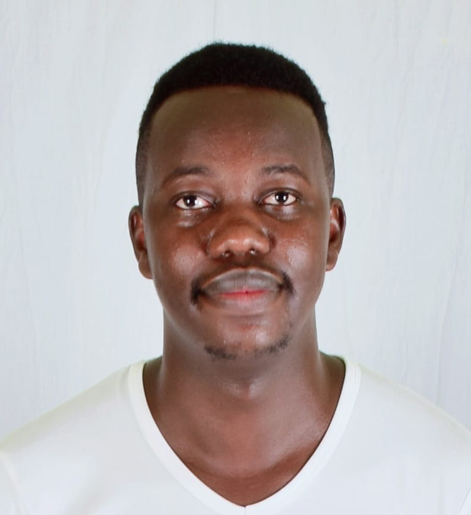

Nahshon Mokua Obiri
PhD student in AI and Data Science
University of Siegen, Germany
About Me
I am a dynamic, team-spirited, and performance-driven graduate engineer with an excellent learning attitude; trainable and ready to embrace positive change with a positive mindset. I am active in outdoor leadership and mentorship programs and am ready to motivate others to achieve their dreams.
I am pursuing a Ph.D. to attain scholarly excellence in teaching and research toward achieving Sustainable Development Goals, with a focus on AI and Data Science.
Latest Summary
- May 2024: Presented a poster at the Center for Sensor Systems PhD Forum - LoRaWAN-integrated Wearable Sensor Networks for Remote Human Activity Recognition: Applications, Challenges, and Possible Solutions.
- Oct 2023: Started in assisting teaching courses in electrical engineering, computer science, and AI at Siegen, Germany
- Sep 2021: Published a Journal paper - Anomaly Detection for Raw Water Quality – A Comparative Analysis of the Local Outlier Factor Algorithm and the Random Forest Algorithms
- May 2021: Worked on a Project - A Water Quality Monitoring System using Wireless Sensor Networks